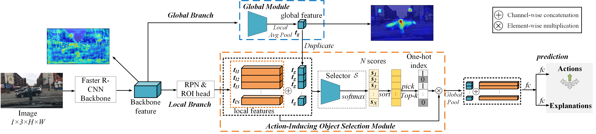
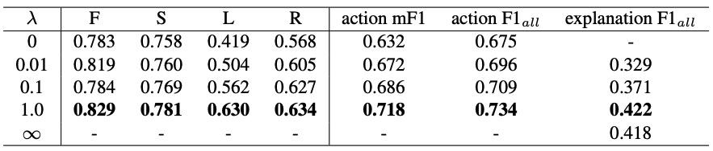
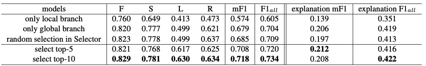
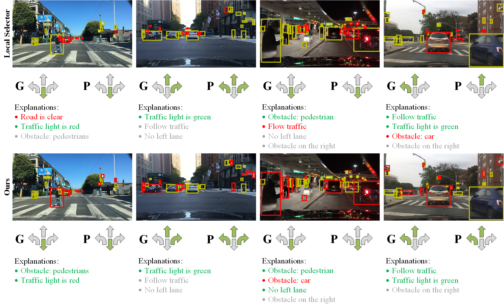

BDD-OIA Dataset

Some scenes in BDD-OIA. The green arrows in the bottom right show the ground truth for possible actions.
BDD-OIA Dataset Overview
BDD-OIA dataset is an extension of BDD100K. We collected the complicated scenes (> 5 pedestrians or >5 vehicles) in the original BDD100K dataset, and then annotated them with 4 action categories and 21 explanation categories.
Statistics
BDD-OIA contains 22,924 5-second videos. In particular, the training set includes 16,082 videos, the validation set includes 2,270 videos while the test set contains 4,572 videos. The statistics of categories and complexity are shown below.
Action and explanation categories in the BDD-OIA dataset.
Download
The dataset is available here. There are two files: lastframe.zip (742MB, used in our paper) and BDD-OIA.zip (27GB, original dataset).
Architecture
The architecture of the proposed network is shown below. The Faster R-CNN is used to extract backbone features, which are fed into a global and a local branch. The Global Module generates a global feature map that provides scene context, while the local branch captures the details of action-inducing objects. In the local branch, a selector module outputs a score for each object feature tensor and associated global context information. The top k action-inducing objects are selected and the features from the two branches are concatenated for action and explanation prediction. Two visualizations derived from the input image are also shown. The combination of local and global features and end-to-end supervision enables the network to reason about scene-object relationships and produce a global feature map more selective of action-inducing objects than the backbone feature maps.
Results
The evaluation metric is F1-score. We present the results of different multi-task scale and different network architectures below.
Action and explanation prediction performance as a function of the importance of each task (determined by λ). Labels denote “move forward” (F), “stop/slow down” (S), “turn/change lane to the left” (L), and “turn/change lane to the right” (R).
Action and explanation prediction performance using global and local features. “Only local branch” (“Only global branch”) means that the network ignores global (local) features, “random Selector” that object features are chosen randomly, and “Select top-k” that the selection module chooses the k objects of highest score.
Some qualitative results are also shown below.
Examples of network predictions, objects selected as action-inducing, and explanations. Yellow bounding boxes identify the objects detected by the Faster R-CNN, while red bounding boxes identify the objects selected as action-inducing by the proposed network. ”G” stands for ground truth and ”P” for prediction. For explanations, green indicates true positives, red false positives, and gray false negatives (i.e. valid explanations not predicted).